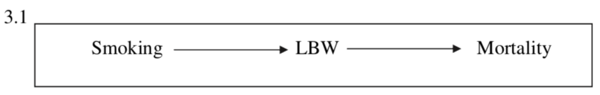
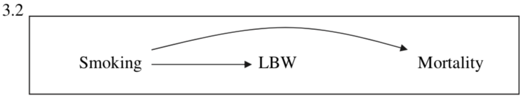

1.1 Getting Started (Scenarios 1-2)
To investigate why this is the case, researchers proposed a few possibilities why the paradox happened.

This is the simplest model the researchers proposed. We may think: “Well, maybe smoking causes low weight babies which then causes infant mortality.” This chain structure of DAG tells us that mortality and smoking are marginally dependent, but conditionally independent on Low Birth Wright. But our data tell us that mortality and smoking are dependent conditioned on Low Birth Weight. This model is not consistent with our findings.

Alternatively, we may see the effect of smoking on mortality rate directly. Similarly with Scenario 1, this fork structure of DAG tells us that low birth weight is not a mediating factor in between. But in this case, the effect of smoking on mortality should be the same when we adjust for birth weight. However, this claim is not consistent with our findings.